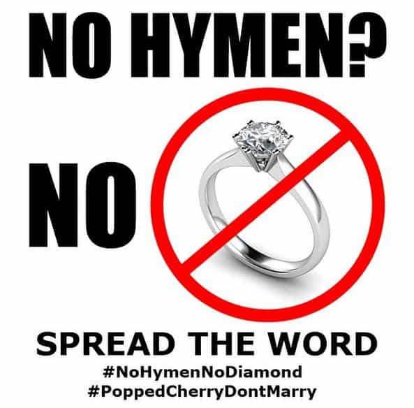

British royal weddings are deeply imbued with tradition. There are reasons. Choices of spouses have consequences, and the Tudor dynasty was an exemplary case study. But since absolutist monarchy became obsolete, and the royals no longer call the shots, does that mean tradition can be thrown out the window?
Earlier, that didn’t fly. In brief, King Edward VIII had to abdicate the cushiest gig in the world to marry Wallis Simpson. There were three strikes against her: American, divorcee, and promiscuous. The royal wedding of Prince Harry—potentially a successor to the throne—demonstrates that attitudes have changed. Still, was that a good idea?
Should kings and princes marry virgins?

Not to put too fine a point on it…
Traditionally, premarital chastity is highly important for royal brides. Used merchandise isn’t fit for kings and princes. Why? Catherine Howard’s marriage to the aging Henry VIII ended disastrously. She was disappointed on her wedding night, because she thought all rulers have twelve inches.
More seriously, Queen Lolita was caught in two affairs: the king’s “friend”, and an undisclosed Chad Thundercock returning from her past. (Long before, Catherine’s first experience was her music teacher feeling her up. That was consensual, but well into Pizzagate territory.) These days, such scandals keep tabloid reporters employed; back then, heads rolled. In the aftermath, concealing a future queen’s sexual history became a crime.
Making a fool of a king is pretty serious business, especially by cucking him. Dirty laundry about the queen’s—or potential queen’s—past is also scandalous. There indeed have been royal bastards, sometimes very effective ones. Still, it’s pretty important to know that the dynasty’s heir isn’t the milkman’s kid. Although today’s royals are basically just celebrities, they’re still important national symbols.
The tradition ends
Before the Baby Boomers, premarital sex was strongly discouraged. That’s been a cultural norm since the ancients figured out how reproduction works. These days, virgin brides are pretty scarce outside of devout religious communities. It’s likely little different for the upper classes. Will this bring turbulence to the Harry-Meghan relationship? We’re about to see. Much depends on whether her Cock Carousel days are truly over.
So Meghan was an actress; that might mean trouble. Still, it gets worse. A Daily Mail article lists several of her former liaisons. The first described—Simon Rex—is a Hollywood actor, model, and rap musician. As “Sebastian”, he also did three pornos marketed for gays, though “Hand Solo” would’ve been a better stage name. That’s merely the beginning; the article is a gruesome read. Wallis Simpson now seems nearly virginal by comparison. Further, Catherine Howard’s “alpha fucks, beta bucks” gold digging was small potatoes.
Could this mean trouble? Number of premarital partners strongly correlates to divorce risk. Bailing on her previous marriage after two years isn’t encouraging either. So is having divorced parents, among other factors. Apparently Harry didn’t sign a prenup. Uh oh… Royal breakups were a smidge messier when Henry VIII reigned, but orderly exit plans are prudent and discourage misbehavior.
Activism
Fortunately, she’s not this bad. Hopefully that won’t change.
I was a captive audience to the royal wedding’s livestream. When the commentators started laying it on too thick, I tried to drown out the blather with Metallica and Estirpe Imperial. However, some of it leaked through. They highlighted Meghan’s activism, and (of course) her commitment to feminism. They certainly weren’t the first to bemoan how leaving all that behind is unfortunate. Accordingly, she has closed social media accounts relating to that.
By tradition, the royal family avoids political statements. That’s odd, since they once ruled with absolute power. Their influence might be very helpful, if they have something sensible to say. However, that’s quite uncertain, given today’s epidemic of rich people becoming limousine leftists. Be all that as it may, an SJW princess could generate much controversy and make the whole family look silly.
Perhaps the tradition of refraining from politics will go out the window too. When do leftists ever shut up for propriety’s sake? She’s none too classy, according to her own brother, so anything’s possible. What happens if she starts ranting about “mansplaining“? Will they take away her limo and make her ride in a Yugo?
Further, if they split up, not even tradition stands in the way. After Princess Diana’s divorce, she was involved in various causes that got her much liberal admiration. Still, to her credit, campaigning for AIDS awareness and against land mines was pretty inoffensive. If Meghan goes full SJW, she’ll be a royal pain indeed.
The ethnic angle
There’s been much discussion about Meghan’s Black ancestry. Predictably, the media spins it positively. Actually, she looks less African than the impostor Rachel Dolezal, but the ceremony played it to the hilt. It’s highly doubtful that Harry was under orders to choose her specifically. (Likewise, his mother’s later taste for Muslim boyfriends was her own idea.) Still, it couldn’t have worked out better for the globalist shmucks trying to wreck Europe.
Historically, sometimes royals aren’t related to the public they rule. King George I didn’t even speak English, and neither did Junior. (The later House of Windsor dynasty is really part of the Saxe-Coburg und Gotha family, although their Anglo-Saxon subjects aren’t much different.) Still, on the other side of the pond, the memory of foreign royals likely inspired the Constitutional provision specifying that an American President must be born in the USA. That was still taken seriously until Obama.
Although it’s unremarkable for royals to seek matches in nearby countries, marrying outside of their race is another matter. That used to be very rare in the general public too, though massive propaganda efforts are having their effect. However, among the nobility, that was pretty much unheard of until Coudenhove-Kalergi. Surely the usual suspects are gloating about this latest development.
I’ll assume Harry’s choice is more than just celebrity virtue signaling. However, it will be played to the public that miscegenation is acceptable, even hip and fashionable. Al Sharpton was pretty ecstatic. So marrying Whites is the ultimate measure of success for Blacks? Dude, really? Muhammad Ali would’ve disagreed. On that note, a bloke named Rudyard Kipling wrote:
Let the corn be all one sheaf—
And the grapes be all one vine,
Ere our children’s teeth are set on edge
By bitter bread and wine.
All that said, it wouldn’t have been impossible for Harry to find someone who is classy, not a middling actress, younger than him, and ethnically British or at least descended from kindred peoples. That’s not too burdensome of a job requirement, especially since being a prince is a pretty cushy gig.
Conclusion
This is royal gold-digging done correctly.
Weddings are supposed to be happy occasions, and I hate to rain on anyone’s parade. (Still, her brother had far worse to say.) It’s all about the loooove, as the gay marriage advocates constantly told us. Even John Lennon said love is all one needs, right?
Actually, the purpose of marriage is a stable environment to raise children, who are essential to further one’s lineage and nation. All other considerations (love, sex, shared living arrangements, etc.) are secondary. This is especially so for dynasties. When royals like Henry VIII let their little heads to the thinking, trouble often followed.
All that said, perhaps Wallis Simpson wasn’t so bad after all!
Read More: The New Royal Baby Proves That Even A Degenerate Society Lusts For Tradition